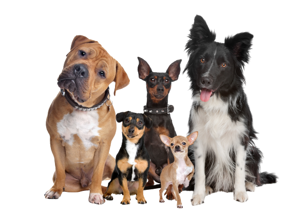

Породы собак

Домашние питомцы встречаются почти в каждой семье. Породы собак во всем мире многочисленны. Они различаются темпераментом, внешним видом, размером и другими качествами.
Одни являются прекрасными охранниками, а другие станут верными компаньонами. Перед тем, как выбрать себе щенка, необходимо познакомиться с породами и узнать об их главных характеристиках (размер, характер, шерсть и пр.).
Тип питания может быть любым (натуральная пища, сухой корм), но необходимо учитывать активность и размер животного.
Бигль
Характеристики:
� Размер: средний.
� Рост и вес: 33-40 см, 9-14 кг.
� Шерсть: короткая, гладкая.
� Продолжительность жизни: 10-15 лет.
� Тип: охотничья, компаньон.
� Стоимость: 30-50 тыс. руб.
Эти собаки крайне энергичны и любопытны. Они постоянно стремятся исследовать все вокруг и склонны к побегам,
поэтому держать ее следует на поводке. Бигли дружелюбны и к людям, и к собакам. Распространенный окрас — триколор.
Кончик хвоста обязательно белый.
Вельш-корги

Характеристики:
� Размер: средний.
� Рост и вес: 30 см, 10-14 кг.
� Шерсть: средняя, гладкая.
� Продолжительность жизни: 12-15 лет.
� Тип: пастух, компаньон.
� Стоимость: 45-100 тыс. руб.
Все корги любят играть, но хорошо чувствуют настроение владельца и не склонны навязывать общение.
Представители породы великолепно поддаются дрессировке. Окрасы разные: рыжий, черно-подпалый, палевый, соболь,
тигровый.
Гаванский бишон
Исторической родиной этой породы является Куба. Есть версия, что предков данных животных скрещивали с болонками и пуделями.
В результате такой работы и были получены собаки, которых называют гаванский бишон.
Характеристики:
� Размер: миниатюрный.
� Рост и вес: 22-27 см, 3-6 кг.
� Шерсть: длинная, мягкая.
� Продолжительность жизни: 15-17 лет.
� Тип: комнатная, компаньон.
� Стоимость: 50-80 тыс. руб.
Маленькая, активная и дружелюбная собака с привлекательной внешностью. Такое животное подойдет для семьи с маленькими детьми.
Гаванцы остро нуждаются в обществе человека. Окрасы: белый, палевый, коричневый, красно-коричневый или любые их сочетания.
Далматин
Исторической родиной это Хорватская порода. Название ей дала область Далмация, которая расположена на Балканском полуострове.
Ученые утверждают, что такие собаки существуют уже много тысячелетий, так как во время раскопок были найдены древние картины с похожими животными.
Характеристики:
� Размер: средний.
� Рост и вес: 54-60 см, 22-34 кг.
� Шерсть: короткая, гладкая.
� Продолжительность жизни: 10-12 лет.
� Тип: охотничья, компаньон.
� Стоимость: 20-40 тыс. руб.
Мощная, выносливая и активная собака. Далматины уравновешенные, спокойные, хорошо поддается всем видам дрессировки.
Особенностью породы является уникальный окрас: на белом фоне разбросаны черные или коричневые округлые пятнышки, размером с монету.
Колоскова Дарья